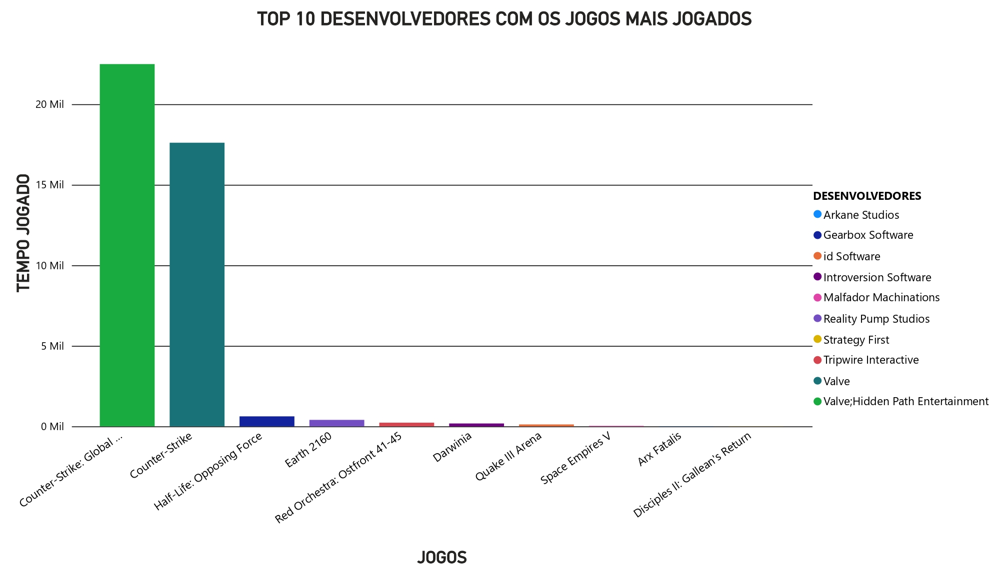
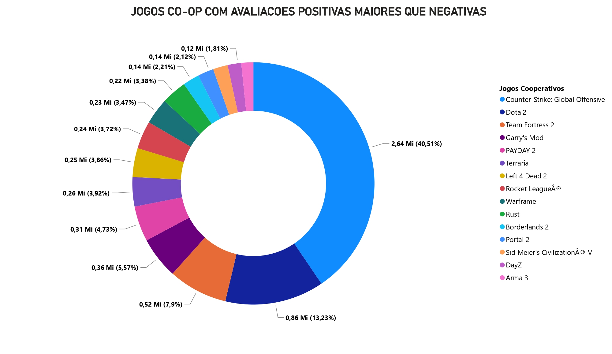
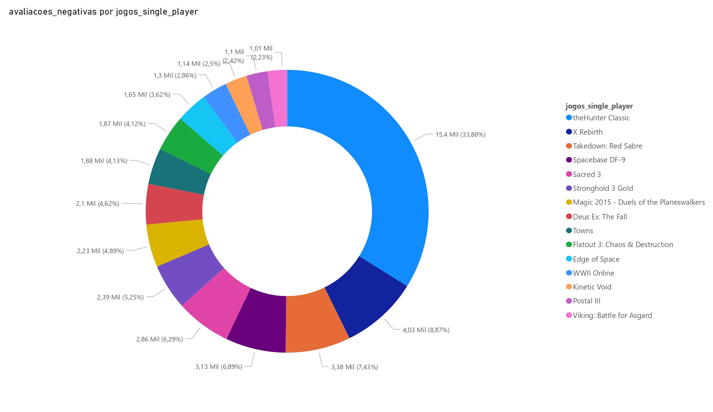
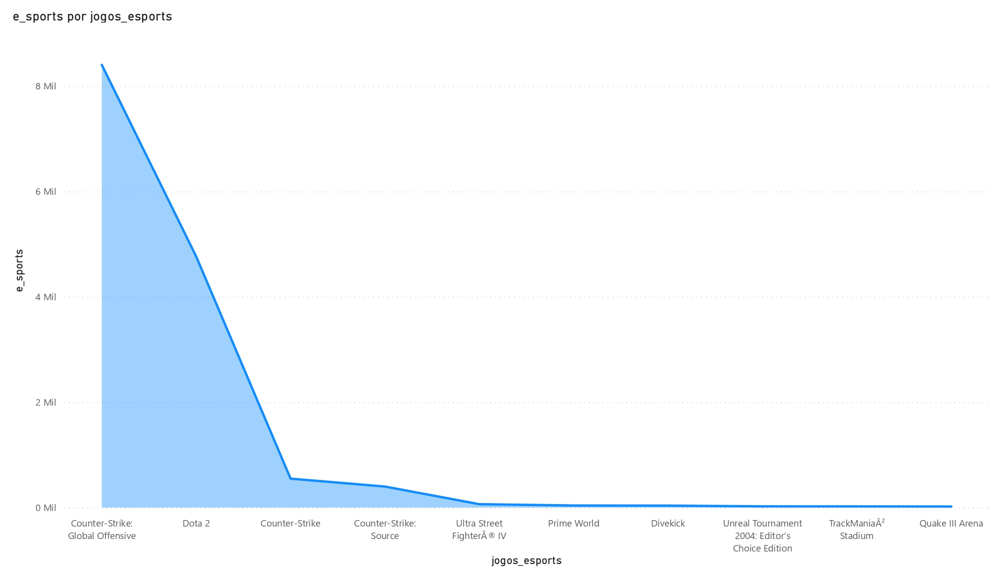

• Top 10 desenvolvedores com jogos mais jogados
• Jogos co-op com avaliações positivas maiores que negativas
• Jogos single-player com avaliações negativas maiores que positivas
• Jogos que mais estão presentes nos e-sports(esporte eletrônico)
Clique na estatística desejada e veja o que desejar.
Voltar ao mapa
Top 10 desenvolvedores com jogos mais jogados
×

Jogos co-op com avaliações positivas maiores que negativas
×

Jogos single-player com avaliações negativas maiores que positivas
×

Jogos que mais estão presentes nos e-sports(esporte eletrônico)
×
